Week 2's Goals:
Choosing Software:
This week we were tasked to choose a software to use for this program, a 2D software and a 3D one. For designing and documenting our files and work through this program. Originally I decided to use Onshape and Autodesk Illustrator. Even though in the worldwide class we were introduced to a lot of open source tools, which I prefer using. I have training in these previous tools already so I thought it would be better to improve my skills in these.
With that being said I got to work on the general idea of my project for this class. A desktop companion robot, I have dubbed: DAP-R (Desktop Assistant Pet - Robot)
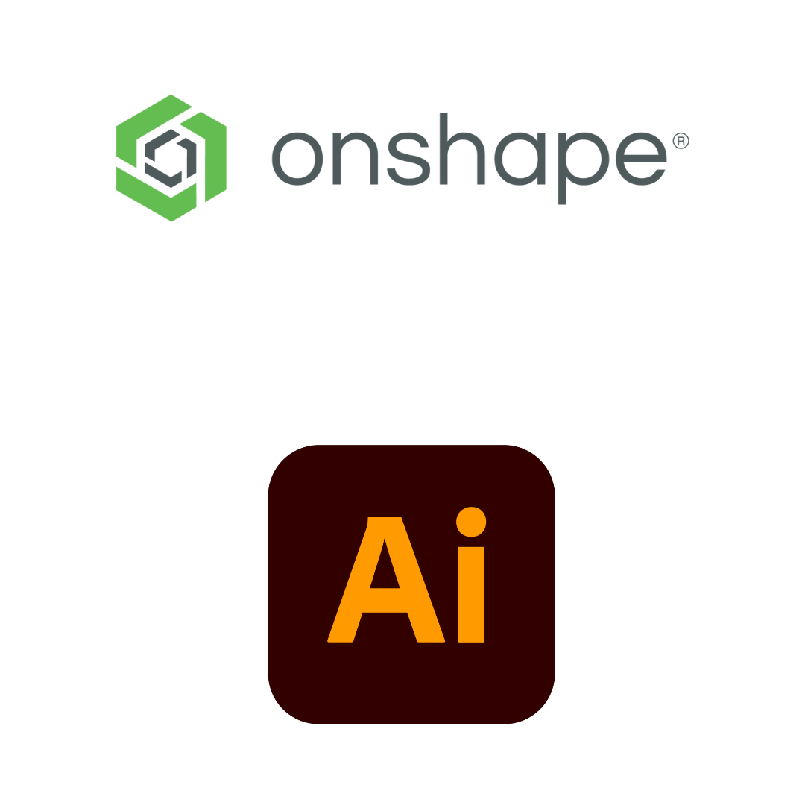Starting to Design:
Having learned (and taught) OnShape for several years I saddled up and tried to start my design like that. I started rendering a normal project with the idea of 3D-printing the model. It would be a set of files where the parts woulds screw directly into the base. Because we would eventually have to design a parametric studio I started by using OnShape's local "variable table" and started trying to design with those measurements in place.
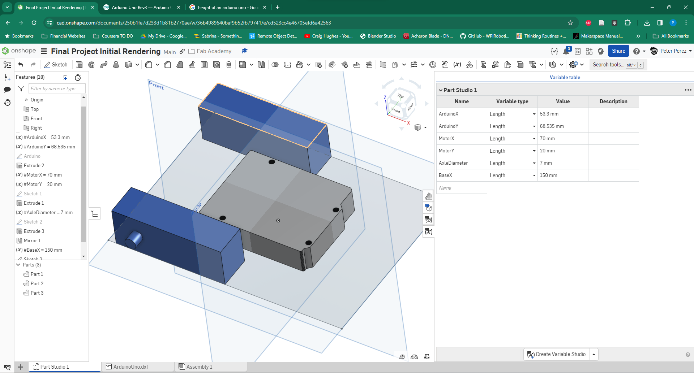Pivoting to a Modular Design
This week also happened to be the week of the FIRST Tech Challenge district competition and I was assisting my boys in setting up their robot. Mostly designing some number tags for their robot on Illustrator for laser cutting. Part of this process is setting up the holes for the laser cutter to make to be able to attach the item to the robot. In doing this, the brand of parts that the students prefer GoBilda is most compatible with 4mm holes in a grid spacing them 8mm apart. You can see this at the bottom of the design here:
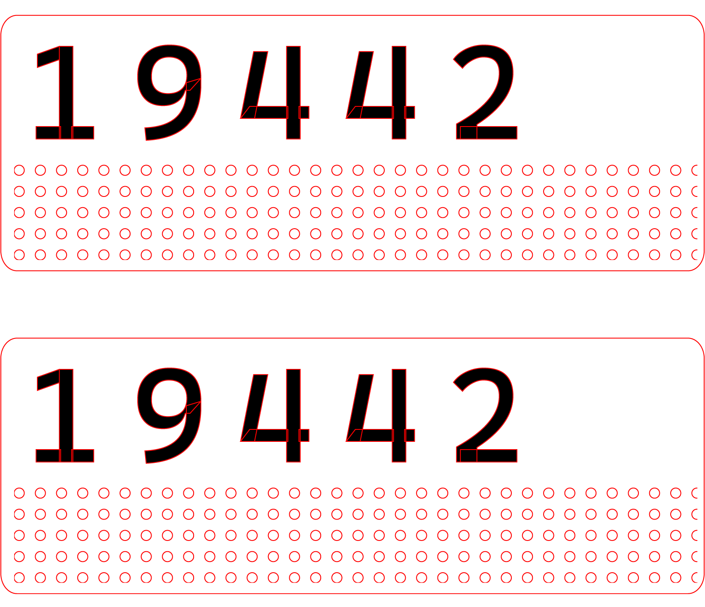This idea led me to break into a new version on Onshape, building the design to start off of a place with the same grid, but then have items that would screw on. A modular system at its best. I branched off into a different version on Onshape to be able to track these design changes while not losing the original file.
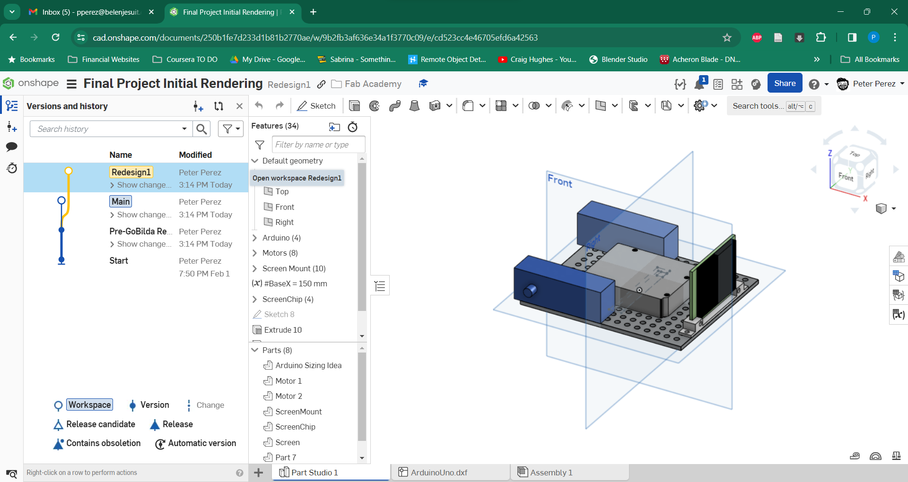Here I started using the patterns and trying to figure out the parametric design tools that Onshape had to offer. In this design I worked through all of the measurements I had and especially the tools needed to use equations to derive measurements and truly make the design parametric. If the size of the side drives the number of holes, it truly makes an easier process. However, I ran into issues in using the equations. Especially finding out that units are of the utmost importance. You have to use unitless values as well as those with units in creating patterns and cancelling those units out is important for determing what to do, if not it throws errors.
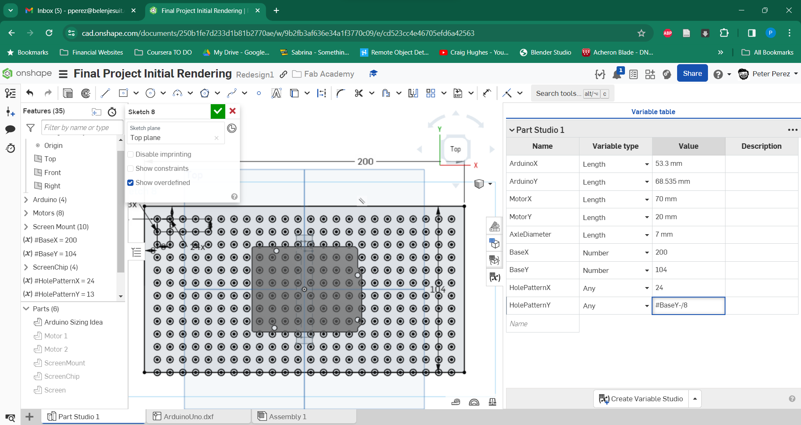The Switch to Fusion 360
Part of the process of designing this and some of the new tools I wanted to learn was to see if Onshape had a mesh editing tool. Allowing for creating more organic shapes, these tools are amazing for the reproduction of things like these. I started doing some googling and stumbled across a video on how to make a toothbrush on OnShape. In this video it showed how to make contour driven profiles, but the more I watched it, the more I noticed OnShape was not the correct tool for the work that I wanted to do. This time, I needed a tool that could do these mesh shape changes. So this led to the decision to switch over to Fusion360.
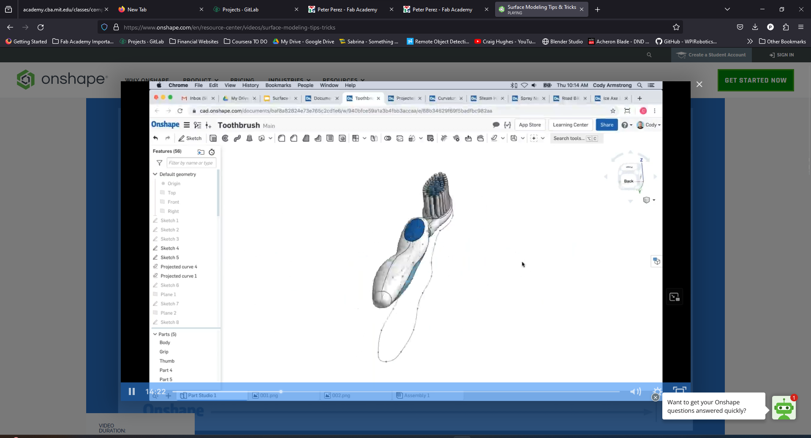 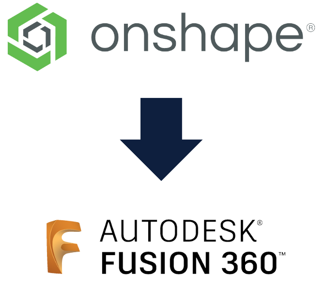Though I have dabbled in Fusion 360 some. This did not mean I knew any of the tools I could use or had a good workflow on this program. Learning this tool would also help me further support my students because the general tool that they use in our school is indeed Fusion360. So I was off in learning a new tool. I started with the issue anyone has in learning a new tool, what are all the shortcuts and tools I need to learn to get this working? Even moving around the view studio was a strange experience. But some work and elbow grease led to some good progress in the creation of
Using Fusion 360's more powerful equation tools I could make the driven constraints that I wanted with much less of a hassle than before. Though this design is not as fully parametric as I would like it has a lot of the basic measurements I need to seed for the rest of the design. Intended to be a design that is both 3d printed and laser cut I have been working on a set of basic modules to attach to this.
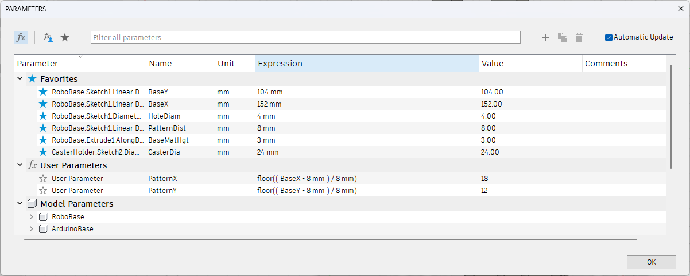The Birth of DAP-R
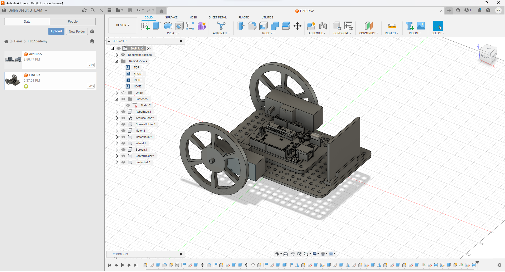Above you can see a drawing of DAP-R in his first testing form. He is missing a battery and charging module but this should be fixed by version 2. I just wanted to get the idea of how I wanted my character to look.
Below is an engineering drawing (without measurements) of DAP-R's first chassis as well.
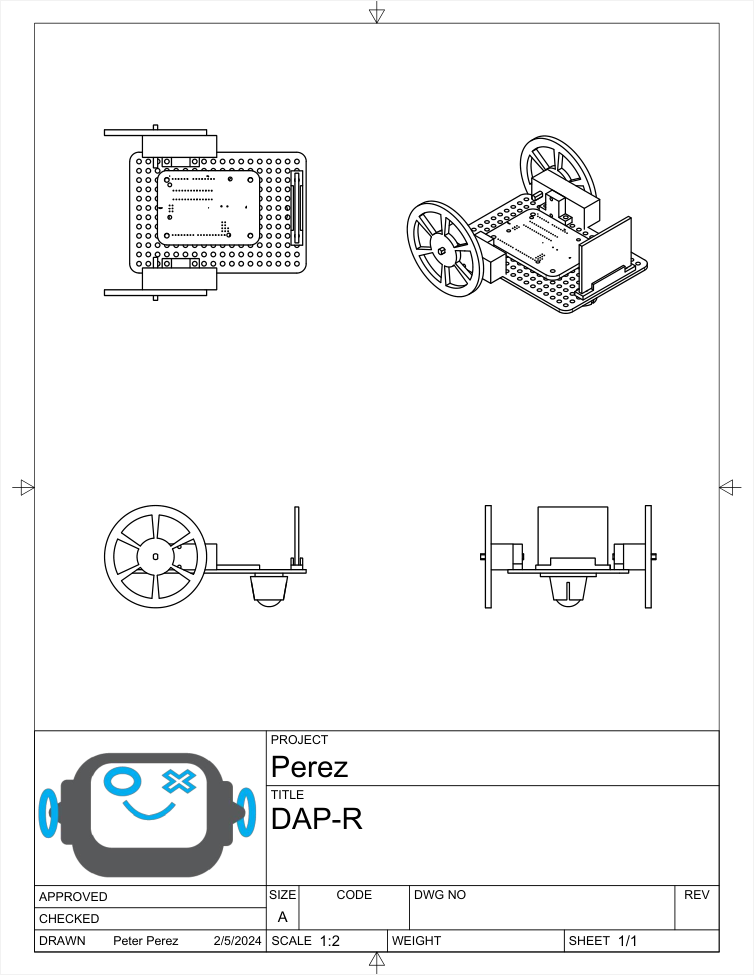DAP-R File Download
If you click on the icon below, you can download the first version of the Fusion file for the DAP-R project. Feel free to adapt and enjoy.
(RE)Learning Illustrator
Illustrator is a program that I have dabbled with in the creation of a few simple graphics and the conversion of laser cutting files to ones that my in house Epilog Helix can understand. I cannot say I am anywhere close to being a master of this program but I can say I am somewhat proficient in figuring things out with how it works. That being said I had an issue. I had lost the original .AI file that my little robot logo existed in. I have spent some time designing files and items on this program but if I would say I know where to find everything I would be lying. This below is the subject in question that needs a redesign:
So what I did first was I uploaded this version of him to Illustrator in this pixellated form. To do that I just did the following:
After that it looked a little something like this:
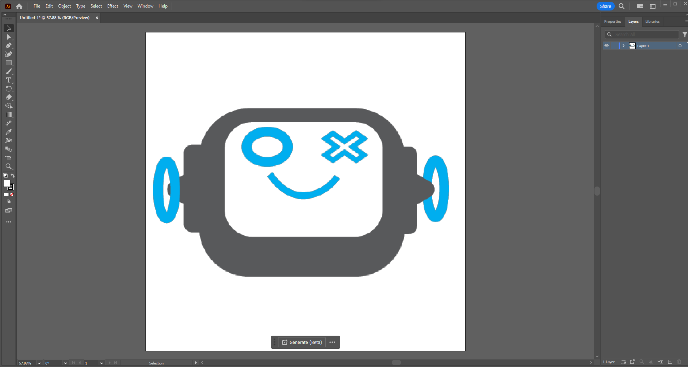Tracing, But Advanced..
What I started doing now was tracing all of the shapes using primitives, squares, circles, triangles and similar shapes to recreate the object that I made originally.
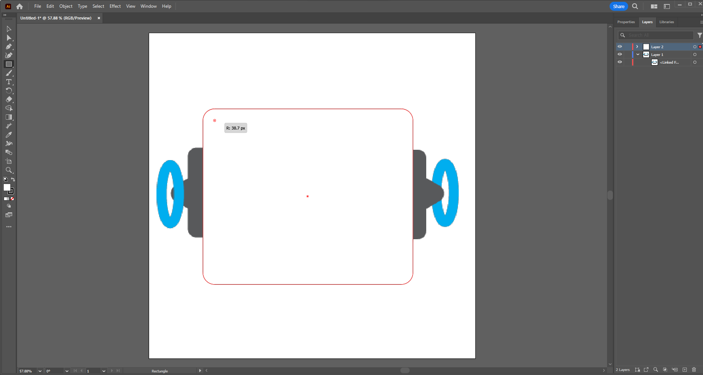To curve the edges I decided to use the small dots on the corners of the image. This let me fillet the sharp edges and I pulled until they matched with my original shapes. Unfortunately there were no precise measurements here or I would have used them first. This was free hand, as artistic as I can get.
I also used the eyedropper tool to sample the same colors I used originally to recreate my image to my preferred palette.
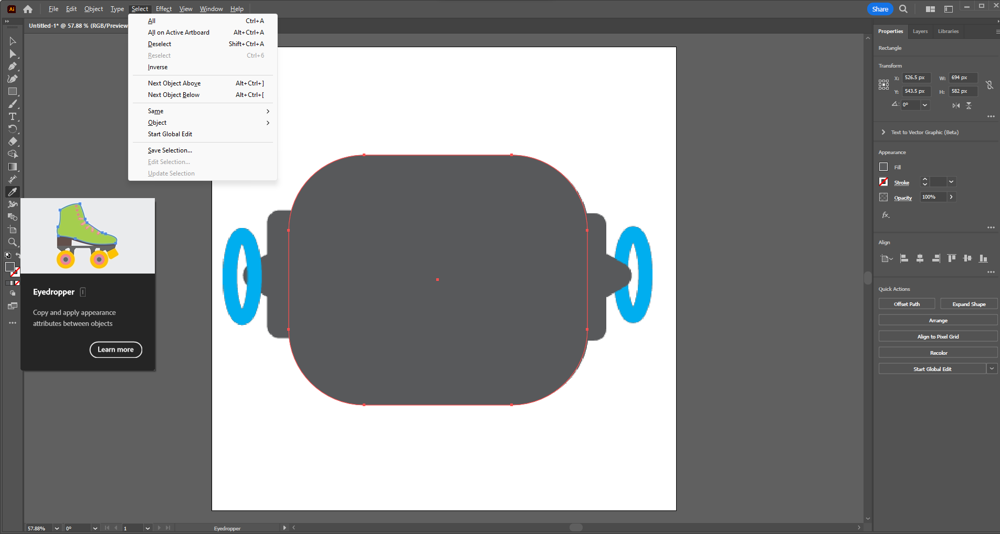Using layers I organized my images so that things would stack as they should and tried to group similar colors to similar layers. This will allow for better vinyl cutting in the future as well. Or even laser cutting if needed but I will have to change the outlines of my images to something with a stroke so the devices can understand what I am doing.
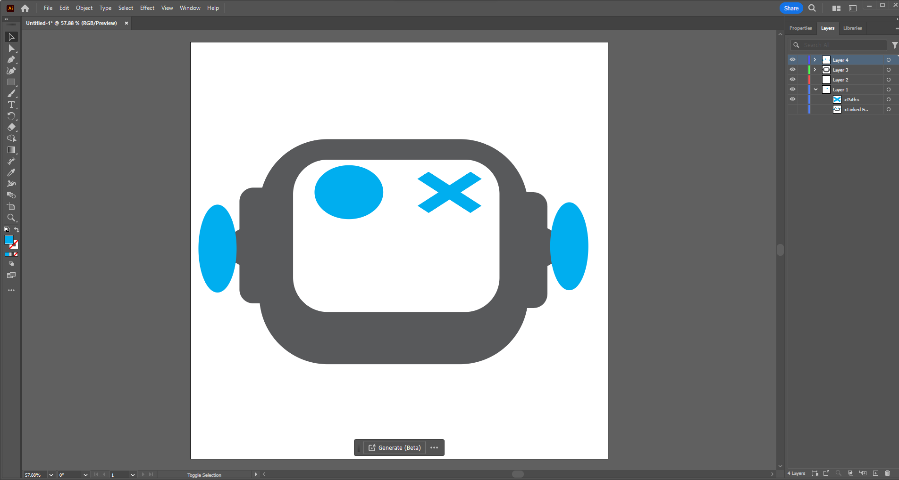Pen Tool
For the mouth I knew I could use primitives but I could use a wonderful tool called the pen tool. It allows you to trace and create profiles essentially freehand by connecting dots with splined curves. The only thing you need to remember is to double click on sharp edges to start another smooth curve. The four points that are on each end of the mouth are both anchored by double clicking. The other points are single clicks that create the contour.
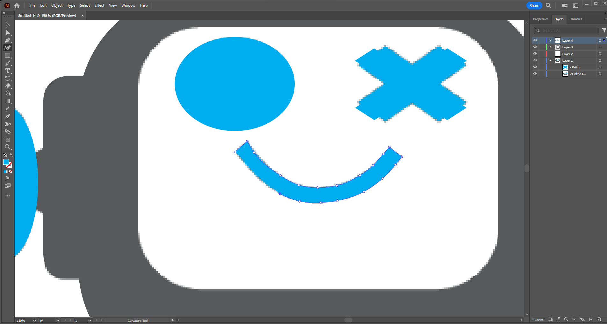Pathfinder Tool
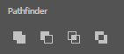To create the gaps in the eyes and ear... rings? I used the pathfinder tool. As well as to create the major head shape into one shape. This tool takes grouped objects and makes one bounded path out ofg them changing them from seperate shapes to a singular one.
To make those shapes what I did was I copied the existing shape, made it smaller, and then changed its color to place it properly. Once I did that I selected the original and the smaller copy and then used the pathfinder tool to help me form the final shape.
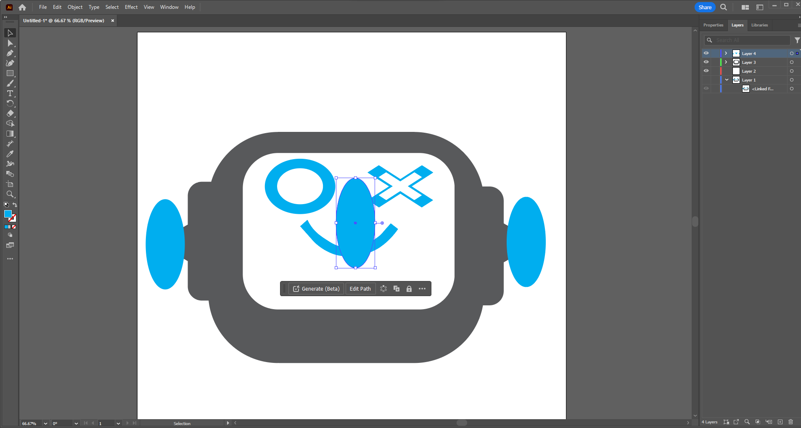The Final Recreation
Though not exact, I am happier with this shape as it is sharper and has a bit more character than the original image. I also made copies to make a happy, sad, and eventually surprised and confused version of him.
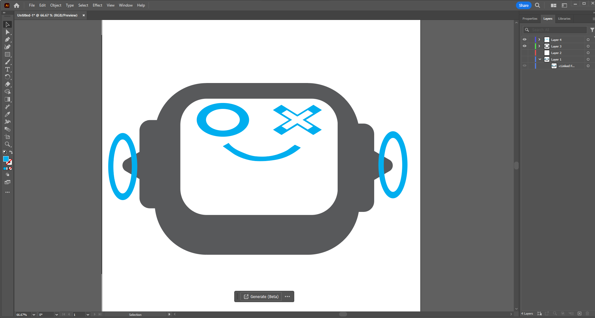The files
Below are two versions of my illustrator logo I designed above. The first is the regular version and the second is a special "sad version"